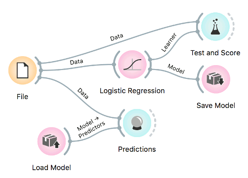

Exporting Models
Predictive models can be saved and re-used. Models are saved in Python pickle format.

Save model
Models first require data for training. They output a trained model, which can be saved with Save Model widget in the pickle format.
Load model
Models can be reused in different Orange workflows. Load Model loads a trained model, which can be used in Predictions and elsewhere.
Load in Python
Models can also be imported directly into Python and used in a script.
import pickle
with open('model.pkcls', 'rb') as model:
lr = pickle.loads(model)
lr
>> LogisticRegressionClassifier(skl_model=LogisticRegression(C=1,
class_weight=None, dual=False,
fit_intercept=True, intercept_scaling=1.0,
l1_ratio=None, max_iter=10000,
multi_class='auto', n_jobs=1, penalty='l2',
random_state=0, solver='lbfgs', tol=0.0001,
verbose=0, warm_start=False))